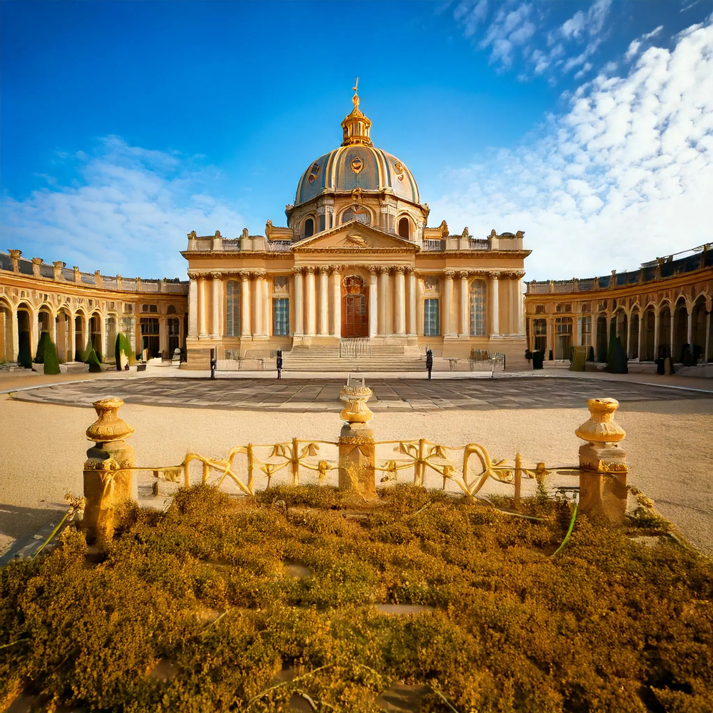
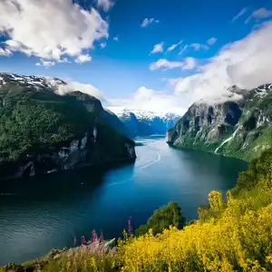

Exploring Europe: A Tourist's Treasure Trove

Why visit Europe?
Europe is like a big playground for travellers.
It’s packed with cool spots, both famous and hidden. You can dive into history, munch on unique foods, and soak up stunning views. But there’s more than just the well-known places.
Europe has lots of hidden gems that offer a quieter, more personal experience.
So, if you’re planning a trip, think about exploring the lesser-known spots. They’re full of surprises and make for some pretty unforgettable stories.
Key Takeaways
- Europe is full of famous landmarks, but the lesser-known spots offer unique experiences.
- Exploring hidden gems helps reduce the impact of overtourism on popular destinations.
- Engaging with local cultures in less crowded areas can lead to more authentic experiences.
- Natural wonders like national parks and coastal views are abundant across Europe.
- Sustainable travel practices can make your trip more rewarding and eco-friendly.
Discovering Europe’s Hidden Gems
Why Hidden Gems Matter
When you think of Europe, bustling cities like Paris or Rome might pop into your mind.
But let’s face it, these places can get crowded, like really crowded. That’s where Europe’s hidden gems come in.
Exploring these lesser-known spots offers a fresh perspective and a more intimate experience.
Plus, it helps spread out the tourist traffic, which is a win for everyone. By checking out these under-the-radar destinations, you’re not just having an adventure; you’re also helping preserve these places for future travelers.
How to Find Hidden Gems
Finding those secret spots isn’t as hard as you might think. It just takes a shift from the usual tourist mindset. Here are a few tips:
- Slow Down: Take your time. Immerse yourself in the local culture instead of rushing from one landmark to the next.
- Talk to Locals: They know the area best. Ask them for recommendations on places that aren’t in the guidebooks.
- Do Your Homework: Research the history and culture of the places you’re visiting. You might stumble upon some fascinating stories or lesser-known sites.
- Volunteer: This is a great way to experience a place more authentically. Plus, it opens up opportunities for unique experiences you won’t find as a typical tourist.
Benefits of Exploring Lesser-Known Destinations
Venturing off the beaten path comes with a bunch of perks:
- Unique Experiences: You get to see things most tourists miss out on.
- Cultural Immersion: Smaller towns often offer a more authentic glimpse into local life.
- Economic Impact: Your visit can help boost the local economy, which is always a good thing.
“Traveling to less popular spots not only enriches your journey but also supports sustainable tourism practices.”
So next time you’re planning a trip to Europe, consider skipping the usual tourist traps and seek out those hidden gems. You might just find your new favorite place.
Cultural Riches of Europe
Europe is a treasure trove of cultural experiences waiting to be explored. From ancient traditions to vibrant festivals, every corner of this continent offers a unique glimpse into its rich heritage.
Engaging with Local Traditions

Engaging with local traditions is like opening a window to the soul of a place.
Whether it’s learning to dance the flamenco in Spain or participating in a traditional tea ceremony in England, these experiences offer a deeper understanding of the people and their way of life.
Immersing yourself in these customs can transform your travel from mere sightseeing to a meaningful cultural exchange.
- Attend a local cooking class to learn about regional dishes.
- Participate in traditional crafts workshops.
- Join in local celebrations and festivals.
Exploring Historical Landmarks

Europe is dotted with historical landmarks that tell the stories of its past.
From the ancient ruins of Rome to the majestic castles of Scotland, each site offers a glimpse into the continent’s rich history.
Exploring these landmarks is not just about admiring their architecture; it’s about stepping back in time and experiencing the events that shaped Europe.
- Visit the Colosseum in Rome for a taste of ancient gladiatorial contests.
- Walk through the halls of the Palace of Versailles to see the opulence of French royalty.
- Explore the medieval streets of Prague’s Old Town.
Participating in Local Festivals
Local festivals are a vibrant expression of a community’s culture and traditions.
They offer a chance to see a city come alive with music, dance, and celebration.
Whether it’s the colorful Carnival in Venice or the lively Oktoberfest in Munich, participating in these festivals is a way to truly experience the spirit of a place.
- Dance at the Carnival in Venice, a spectacle of masks and costumes.
- Raise a glass at Munich’s Oktoberfest, the world’s largest beer festival.
- Celebrate the summer solstice at Stonehenge with a gathering of modern-day druids.
Experiencing Europe’s cultural riches is more than just visiting famous sites; it’s about connecting with the traditions and stories that make each place unique. It’s about leaving with memories that go beyond photographs and souvenirs, memories that have a lasting impact on how you see the world.
Exploring Europe’s cultural rich cities like Venice, Paris, and Barcelona can provide a unique blend of historical and artistic experiences, making each visit a journey through time and creativity.
Natural Wonders Await
Exploring Europe’s National Parks
Europe’s national parks are like nature’s playgrounds, offering a chance to see the wild side of the continent.
From the snow-capped peaks of the Pyrenees to the lush forests of the Białowieża, these parks are a dream for nature lovers.
Imagine hiking through untouched landscapes, where wildlife roams free, and the air is crisp and clean.
Some must-visit parks include Plitvice Lakes in Croatia, known for its stunning waterfalls and emerald lakes, and Sarek National Park in Sweden, a haven for adventurers looking for remote wilderness.
Scenic Hiking Trails
For those who love a good trek, Europe is packed with trails that offer breathtaking views and a taste of adventure.
The Camino de Santiago in Spain is not just a hike; it’s a journey through history and culture. Then there’s the West Highland Way in Scotland, where you’ll find rugged landscapes and charming villages.
And let’s not forget the Cinque Terre trails in Italy, where you can walk between colorful villages perched on cliffs. Each trail has its own unique charm, making it a hiker’s paradise.
Breathtaking Coastal Views
Europe’s coastline is nothing short of spectacular.
Whether it’s the dramatic cliffs of the Amalfi Coast or the serene beaches of the Algarve, there’s something for everyone.
The feeling of standing on a cliff edge, with the sea stretching out before you, is something you can’t put into words.
And for those looking to explore, the fjords of Norway offer a chance to see nature at its most majestic.
Don’t miss the chance to discover Europe’s breathtaking natural wonders and cultural heritage sites with Emerald Cruises, offering an escape from city life.

Standing on the edge of Europe’s natural wonders, you can’t help but feel a sense of awe. The landscapes are as diverse as they are beautiful, each one telling its own story.
Culinary Adventures Across Europe

Savoring Local Delicacies
Embarking on a culinary journey across Europe is like stepping into a world of flavors and aromas that tell the stories of different cultures.
From the rustic charm of Italian pasta to the intricate flavors of French patisserie, every bite is a step into history.
Each region offers its unique twist on traditional dishes, making it a paradise for food lovers.
Imagine indulging in a warm croissant in Paris or savoring authentic paella in Valencia. These local delicacies not only tantalize your taste buds but also connect you with the heart of each locale.
Exploring Vibrant Food Markets
Europe’s food markets are bustling hubs of activity, where you can experience the local lifestyle firsthand.
Wander through La Boqueria in Barcelona or the Borough Market in London, and you’ll find an array of fresh produce, artisanal cheeses, and cured meats.
These markets are perfect for picking up ingredients to create your own culinary masterpiece or simply enjoying a snack while people-watching.
Don’t miss the chance to chat with vendors; they often have the best tips on what to try next!
Wine Tasting in Renowned Regions
A European culinary adventure wouldn’t be complete without exploring its world-famous wine regions.
Whether you’re strolling through the vineyards of Bordeaux or the rolling hills of Tuscany, wine tasting offers a delightful way to appreciate the landscape and the labor of love that goes into each bottle.
Sip on a robust red in the Douro Valley or a crisp white in the Rhine region, and let the flavors transport you. It’s not just about the wine; it’s about the stories and traditions that each vineyard holds.
“In Europe, food is more than sustenance; it’s a celebration of life, culture, and community.”
For those looking to dive deeper into the culinary scene, consider joining a food tour with Eating Europe, where experts guide you through local dining spots while sharing fascinating stories behind each dish.
Whether you’re a seasoned gourmand or a curious traveler, Europe’s culinary landscape promises an unforgettable adventure.
Art and Architecture: A European Journey
Europe is a treasure chest of architectural wonders.
From the towering spires of the Sagrada Familia in Barcelona to the intricate mosaics of St. Mark’s Basilica in Venice, each landmark tells a story of artistic vision and cultural history.
The Alhambra in Granada, with its delicate tilework and serene gardens, offers a glimpse into Moorish opulence, while the Roman Aqueduct in Segovia stands as a testament to ancient engineering prowess.
Exploring Art Museums
Art museums in Europe are more than just buildings; they are gateways to the past.
The Prado Museum in Madrid boasts masterpieces by Velázquez and Goya, while Florence’s Uffizi Gallery houses works by Botticelli and Michelangelo.
Each museum offers a unique perspective on the evolution of art, inviting visitors to explore the depths of human creativity.
Street Art and Modern Installations
Beyond the classical, Europe’s streets are alive with modern artistic expressions.
Cities like Berlin and Lisbon are renowned for their vibrant street art scenes, where bold murals transform urban landscapes into open-air galleries.
In Bilbao, the Guggenheim Museum stands as a beacon of modern architecture, its titanium curves reflecting the city’s innovative spirit.
Wandering through Europe’s art and architecture is like flipping through a living history book, where every corner reveals a new chapter of human expression and ingenuity.
Sustainable Travel in Europe
Practicing Eco-Friendly Tourism
Traveling in an environmentally friendly way is more important than ever. Tourists can make a difference by choosing sustainable options. Here are some tips to keep your trip green:
- Opt for public transportation, like trains and buses, instead of renting cars.
- Stay in eco-certified accommodations that prioritize sustainability.
- Carry a reusable water bottle and avoid single-use plastics.
Supporting Local Economies
When you travel, think about where your money goes. Supporting local businesses can have a big impact. Consider these ideas:
- Eat at family-run restaurants instead of international chains.
- Buy souvenirs from local artisans to support traditional crafts.
- Book tours with local guides who know the area best.
Volunteering Opportunities
Volunteering is a unique way to see Europe while giving back. It connects you with communities and offers a deeper travel experience:
- Join environmental conservation projects to help preserve natural landscapes.
- Teach English or other skills in rural communities.
- Participate in cultural exchange programs to learn and share knowledge.
Traveling sustainably is about making conscious choices that benefit the environment and the people who live in the places you visit. It’s about leaving a positive footprint wherever you go.
Seasonal Highlights and Events
Best Times to Visit Europe
Planning a trip to Europe requires some strategic timing.
Each season brings its own charm and unique experiences. Spring (March to May) is perfect for those who love mild weather and blooming landscapes.
It’s an ideal time to wander through the tulip fields of the Netherlands or enjoy the cherry blossoms in Germany.
Summer (June to August) is popular for beach lovers, especially in the Mediterranean regions, but be prepared for crowds.
Autumn (September to November) is a favorite for wine enthusiasts, as many regions celebrate harvest festivals. Winter (December to February) is magical with Christmas markets and skiing opportunities in the Alps.
Must-See Festivals and Events
Europe is a continent that loves to celebrate, and there are countless festivals throughout the year that attract visitors from all over the globe. Here are a few highlights:
- Carnival of Venice: Known for its elaborate masks and costumes, this festival is a must-see if you’re visiting Italy in February.
- Oktoberfest in Munich: A haven for beer lovers, this event in late September to early October is a cultural experience like no other.
- La Tomatina in Spain: Held in August, this tomato-throwing festival is a fun and messy way to enjoy Spanish culture.
Seasonal Activities and Attractions
Europe’s diverse landscape offers a wide range of activities depending on the season.
In spring, hiking trails across the Alps and Pyrenees open up, offering stunning views and fresh mountain air.
Summer is perfect for exploring the coastal areas, whether it’s the beaches of Greece or the cliffs of Portugal.
Autumn invites you to explore vineyards and taste the new wine in regions like Bordeaux and Tuscany.
Winter transforms many parts of Europe into a snowy wonderland, perfect for skiing, snowboarding, or simply enjoying a hot chocolate at a cozy chalet.
Embrace the seasons in Europe, and you’ll find each visit offers something new and exciting. Whether you’re chasing the sun or the snow, there’s always a perfect time to explore Europe.
Wrapping Up Your European Adventure
So, there you have it.
Europe is like this massive playground for travelers, full of surprises and hidden gems just waiting to be discovered.
Sure, the big cities like Paris and Rome are amazing, but sometimes it’s those lesser-known spots that really steal the show.
Whether it’s a quiet village tucked away in the hills or a stunning coastline that’s off the beaten path, these places offer something special.
Plus, by visiting them, you’re helping to keep tourism sustainable and spreading the love to places that could use a little boost.
So next time you’re planning a trip, maybe think about skipping the usual tourist traps and try something new. Who knows what you’ll find?
Frequently Asked Questions
Why explore hidden gems in Europe?
Exploring hidden gems in Europe offers unique experiences and helps preserve these places for future generations. It also supports sustainable tourism by reducing the impact on popular tourist spots.
How can I find Europe’s hidden gems?
To find hidden gems, try slow travel, talk to locals, research the area’s history and culture, and consider volunteering. These methods can lead you to lesser-known yet amazing places.
What are the benefits of visiting lesser-known destinations?
Visiting lesser-known destinations allows deeper cultural interactions, supports local economies, and provides more authentic experiences away from crowded tourist spots.
How does sustainable travel benefit Europe?
Sustainable travel helps protect Europe’s natural and cultural heritage by minimizing environmental impacts and supporting local communities through responsible tourism practices.
What are some unique cultural experiences in Europe?
Unique cultural experiences in Europe include engaging with local traditions, exploring historical landmarks, and participating in local festivals that showcase the region’s heritage.
When is the best time to visit Europe?
The best time to visit Europe is during spring (April-May) or early fall (September-October) for pleasant weather and fewer crowds. However, each season offers unique attractions and events.